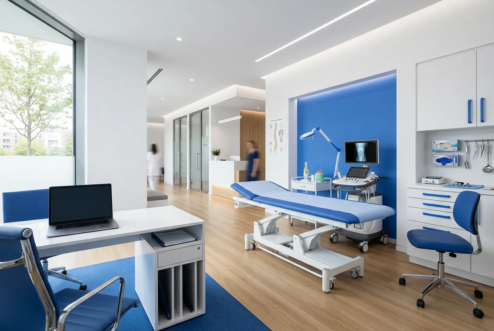
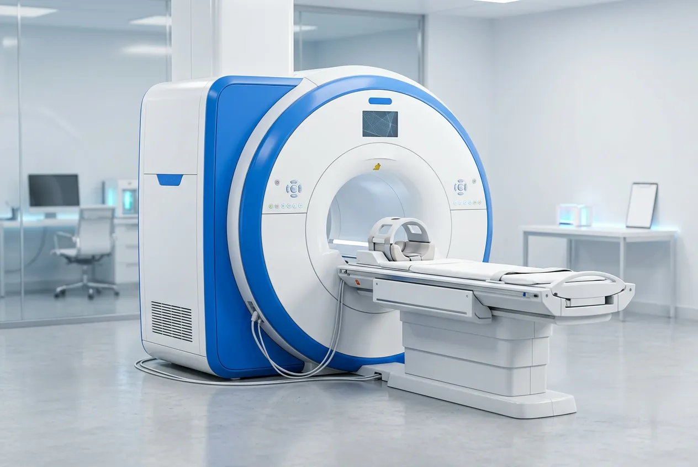
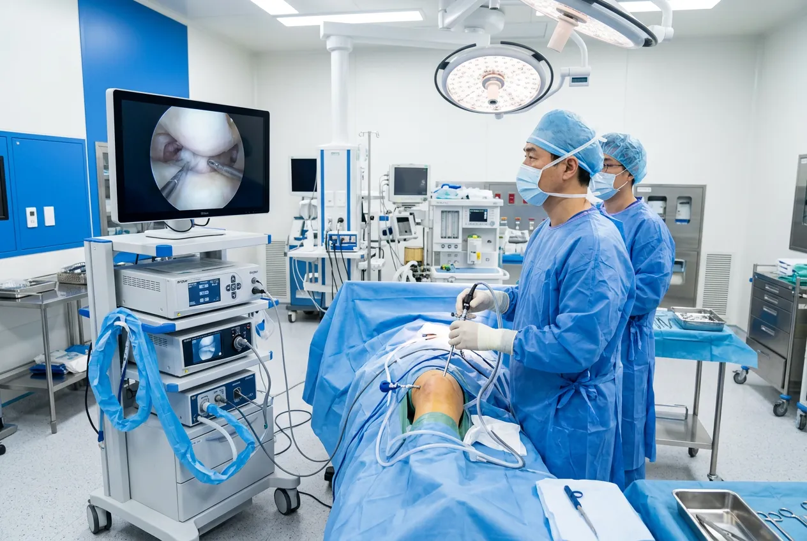
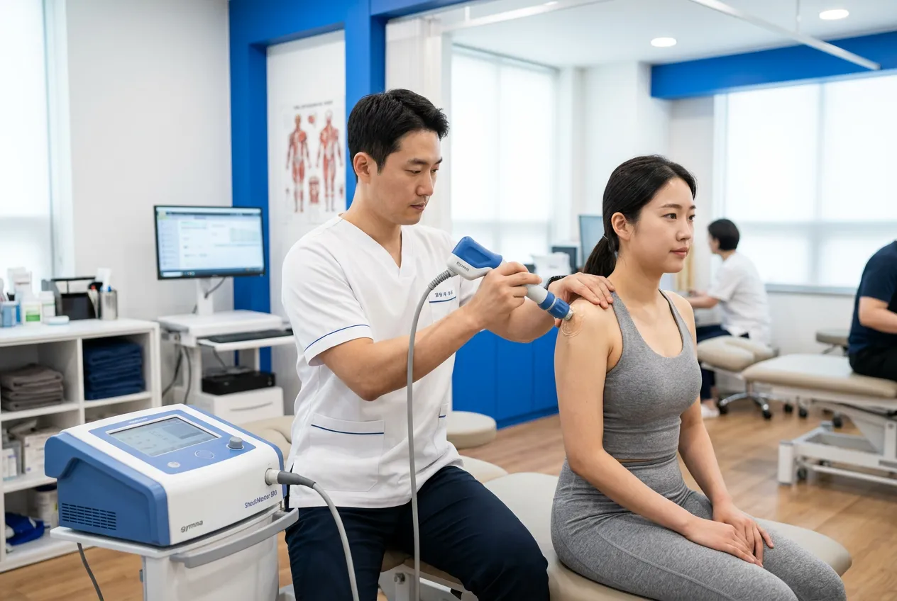
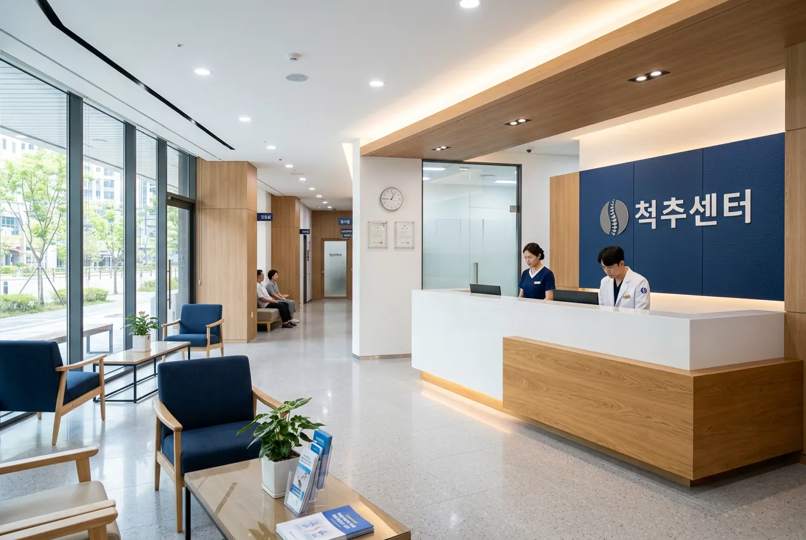
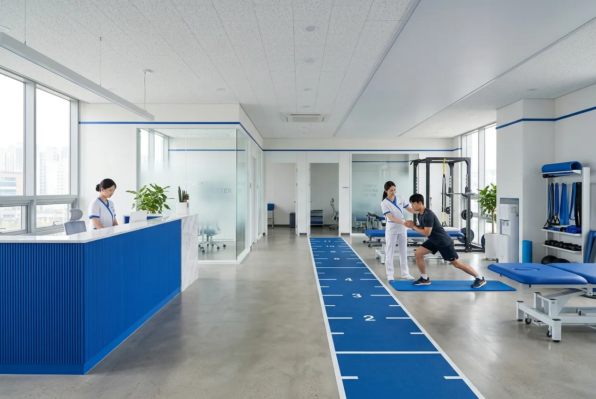
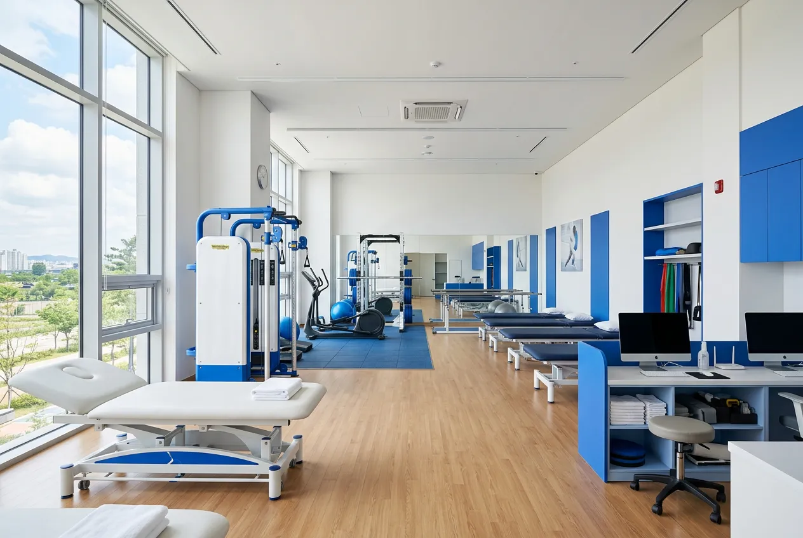
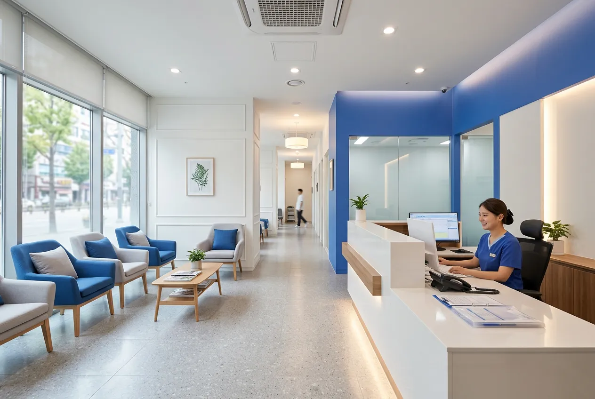
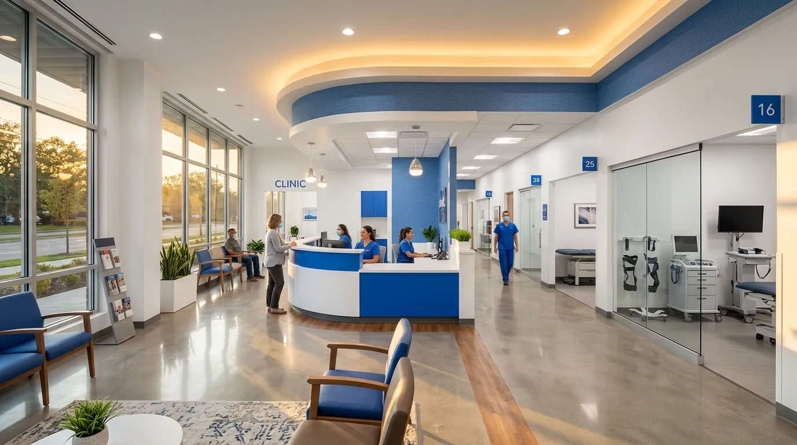

State-of-the-Art Facility
최첨단 진료 환경
독일·미국 수입 장비와 층간 분리된
수술-재활 동선. 환자 안전을 위한 공간 설계.

3.0T MRI

관절경 수술

체외충격파
Specialist Centers
전문 클리닉
각 분야 전문의가 협진하는 4개 센터.
정밀 검사부터 수술, 재활까지 원스텝으로.
Joint Center
관절센터
어깨·무릎·고관절 인공관절 수술 및 관절경 시술

Spine Center
척추센터
디스크·협착증 비수술 및 미세 수술

Sports Medicine
스포츠의학
Rehabilitation Center
재활의학센터
수술 후 회복, 만성 통증 관리, 운동 복귀 프로그램까지 통합 재활 시스템을 운영합니다.

1:1 맞춤 재활 · 운동치료
Our Specialists
연구하는 의료진
논문, 학회 발표, 해외 펠로우십 —
끊임없이 공부하는 전문의들이 함께합니다.
Director
김성훈 원장
관절센터장 · 정형외과 전문의
서울대학교 의과대학 졸업
서울아산병원 정형외과 전임의
미국 Mayo Clinic 관절외과 Fellow
대한정형외과학회 정회원
Specialist
박지연 전문의
척추센터장 · 재활의학과 전문의
연세대학교 의과대학 졸업
세브란스병원 재활의학과 전공의
독일 Heidelberg 대학 척추연구소 연수
SCI급 논문 12편 발표
Specialist
이준호 전문의
스포츠의학센터장 · 정형외과 전문의
고려대학교 의과대학 졸업
삼성서울병원 스포츠의학센터 전임의
대한스포츠의학회 학술위원
프로축구단 주치의 경력
Recovery Journey
회복의 모든 과정을
함께합니다
첫 상담부터 완치 후 운동 복귀까지,
단계별 맞춤 케어 프로그램.
온라인 예약
홈페이지 또는 전화로 간편 예약.
원하는 날짜와 진료과를 선택합니다.
초진 상담
전문의가 직접 증상을 청취하고
신체 검진을 통해 문제 부위를 파악합니다.
정밀 영상 검사
MRI, X-ray, 초음파 등
정밀 영상 진단으로 정확한 원인을 규명합니다.
맞춤 치료 계획
비수술·수술 옵션을 환자에게 상세히 설명하고
최적의 치료 경로를 함께 결정합니다.
재활 & 복귀
1:1 맞춤 재활 프로그램으로 일상 복귀까지.
정기 검진으로 재발을 방지합니다.
Patient Guide
진료 안내
건강보험 적용 항목, 실비보험 청구,
주차·응급 안내까지 한눈에.
진료시간
평일 09:00–19:00 · 토요일 09:00–14:00
일·공휴일 휴진
전화 예약
02-555-7788
주차 안내
건물 지하 1-3층 주차장 이용
2시간 무료 (진료 확인 시)
X-ray, 일반 초음파, MRI(일부), 물리치료, 주사치료(일부) 등이 건강보험 적용 가능합니다. 비급여 항목은 진료 시 상세히 안내드립니다.
관절경 수술은 약 2–4주, 인공관절 수술은 약 6–8주의 기본 회복 기간이 필요합니다. 개인 상태에 따라 달라질 수 있으며, 맞춤 재활 프로그램을 병행합니다.
네, 1층 접수 데스크에서 진단서 및 서류 발급을 도와드립니다. 실비보험 청구에 필요한 모든 서류를 안내해 드립니다.
야간 응급 진료는 운영하지 않습니다. 응급 상황 시 가까운 응급실을 이용해 주시고, 이후 당원에서 후속 진료를 받으실 수 있습니다.
건강보험증(건강보험카드), 신분증, 이전 병원 진료기록(해당 시)을 지참해 주시면 됩니다. 예약 시간 10분 전 도착을 권장합니다.
Patient Stories
환자분들의 이야기
← 옆으로 스크롤하세요 →
"무릎 인공관절 수술 후 3개월째인데, 계단 오르내리기가 정말 수월해졌어요. 김성훈 원장님의 설명이 너무 자세하고 재활 과정도 체계적이었습니다."
박○○ (62세)
인공관절 전치환술 · 2025년 9월
"축구하다가 전방십자인대를 다쳤는데, 이준호 선생님이 수술부터 운동 복귀까지 매주 체크해 주셨어요. 6개월 만에 다시 필드에 섰습니다."
이○○ (28세)
ACL 재건술 · 2025년 6월
"허리 디스크로 수술할까 고민했는데, 박지연 선생님이 비수술 치료를 추천해 주셨어요. 도수치료와 주사치료 병행 후 통증이 80% 이상 줄었습니다."
최○○ (45세)
허리 디스크 비수술 · 2025년 11월
"오른쪽 어깨 회전근개 파열로 팔을 못 올리는 지경이었는데, 관절경 수술 2개월 만에 일상생활이 가능해졌어요. 시설도 깔끔하고 직원분들도 친절합니다."
김○○ (53세)
회전근개 봉합술 · 2025년 8월
"체외충격파 치료를 꾸준히 받았더니 족저근막염이 많이 좋아졌습니다. 비수술로도 충분히 나을 수 있다는 걸 여기서 알게 됐어요."
정○○ (39세)
족저근막염 비수술 · 2025년 12월
Location
오시는 길
주소
서울특별시 강남구 테헤란로 152
프라임타워 8-9층
지하철
2호선 강남역 3번 출구 도보 5분
전화
02-555-7788

